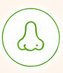
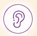

選ばれる理由が見つかる
子どもの率直な反応から、商品の魅力や改善点を発見。
ABOUT
くらべて、さわって、たしかめる。
子どもが「研究員」になって、企業の商品を五感で体験・検証する参加型のマーケティング企画です。見る・触る・嗅ぐ・味わう・聴くといった体験を通して、子どもたちの率直な表情や行動、感じたことを引き出します。
大人へのアンケートだけでは見つけにくい商品の魅力や改善のヒントを、子どものまっすぐな反応から発見。体験で得られた気づきを、商品開発や販促、営業、SNSなど次のマーケティング活動へつなげます。

嗅ぐ味わう見る
聴くMERIT
子どものリアルな体験を、次のビジネスアクションにつなげます。
子どもの率直な反応から、商品の魅力や改善点を発見。
商品開発・販促・営業・SNSなど、次の施策につながるヒントに。
商品を実際に体験してもらい、認知だけではないリアルな関係づくりへ。
ABOUT US
妊娠・出産・育児期の家族が、安心して選べる食品・サービスとの出会いを支える協会です。企業とファミリーの間に立ち、認定・売り場・コミュニティ・体験機会を通じて、継続的な接点づくりを行っています。
食品・ベビーフード・日用品など、幅広い企業を支援。
マタニティフード認定を通じ、安心して選べる商品を可視化。
Tokyo Family Marcheを有明・府中で展開。
ハッピーマタニティBOXに、約1年間で1万人の妊婦さんから応募。
CASE STUDY
2026年8月、府中フォーリスで「たべものとくらしの こどもけんきゅうじょ」を開催。おかし総選挙では、子どもたちが商品を見て、試食して、年齢別カラーシールで投票しました。
POSデータだけでは見えない発見
実施結果では、幼児から特に支持された商品や、大人票の比率が高かった商品など、商品ごとに異なる傾向が表れました。比較・体験の場をつくることで、通常の販売データだけでは捉えにくいターゲット別の反応や、新しい訴求のヒントを可視化できます。
INSIGHT
イベントで得られた子どもの表情や行動、投票データ、生の言葉を、商品開発・販促・営業・PRなど、その後のマーケティング活動に活かせます。
商品提示から体験・投票までの子どものリアルな反応を記録。SNSやEC、営業資料などの素材として活用できます。
投票や体験結果から、年齢帯ごとの支持傾向などを可視化。商品のターゲットや訴求を考えるヒントになります。
「おすすめPOP」などを通じて、子ども自身の言葉を収集。企業側では思いつきにくい販促コピーや商品価値の発見につながります。
※提供内容は実施企画・プランにより異なります。
EVENT
国内最大級のサステナブル・ライフスタイル・イベントで、ワークショップを実施します。
Good Lifeフェア2026
FLOW